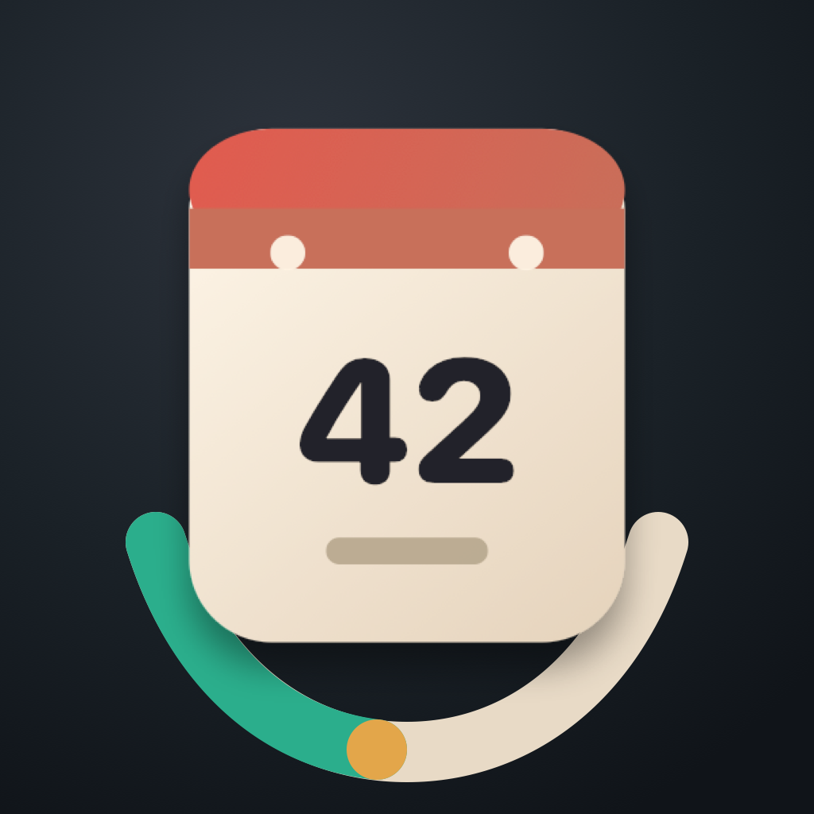

How do I add a moment?
Open EverSince and choose the add button. Enter a title, choose the date the moment happened, select a group, and save. New moments appear in the event list with their day count.

Built with ❤️ in BostonEverSince is a private, local-first app for tracking how many days have passed since moments worth remembering. This page covers common tasks, local storage, troubleshooting, and how to contact support.
Contact SupportSupport email: contact@absessive.com
Since Jan 8, 2026
EverSince does not use a separate email and password login. On iOS, the current release stores your moments locally on your iPhone. The app continues to work offline without a network connection.
Quick help for creating, changing, and organizing moments.
Open EverSince and choose the add button. Enter a title, choose the date the moment happened, select a group, and save. New moments appear in the event list with their day count.
Tap a moment from the list to open its detail view, then choose Edit. You can update the title, date, or group, then save the updated moment.
Open the moment detail view and choose Delete. EverSince asks for confirmation before removing a moment so accidental deletes are less likely.
Open a moment detail view and choose Reset to Today. EverSince can ask for confirmation before changing the original date, and you can show that warning again from Help & About.
Groups organize moments into types like Personal, Entertainment, Work, Health, Travel, or custom groups you create. A group can provide the default icon and color for moments inside it.
In Manage Groups, choose the option to create a custom group. Add a name, icon, and color, then save. Built-in groups stay available, and custom groups can be deleted later.
The current release includes unlimited moments and custom groups. There are no account screens in this version.
EverSince is designed to be local-first. You can create and view moments without a network connection. In the current release, your EverSince data stays on your iPhone.
Try these steps before contacting support.
Confirm that EverSince is installed normally and has not been removed or offloaded from the device.
If a moment looks missing, switch the group filter back to All to make sure it is not hidden by the current group selection.
Close and reopen EverSince if a count, group, or setting does not look current.
If the issue continues, email support with your device model, iOS version, EverSince version, and a short description of what happened.